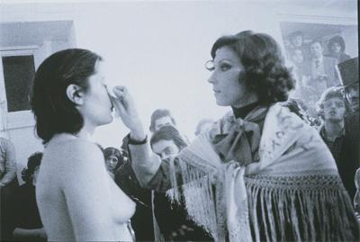

Rhythm 0
1974.
The life threatening performance of Rhythm 0 featured Marina Abramovic, completely vulnerable to the will of her audience for six hours. The participators were given an array (seventy-two) of items to utilize and do with as they please without any repercussions, such objects ranged from a polaroid camera to a gun and a single bullet. Displaying the horrendous actions people were willing to inflict upon another just because they have been given the permission her constant focus on pushing the body’s physical and emotional limits continues in this piece. People pricked her with rose thorns, removed her clothing, whipped her and dried her involuntary tears with tissues. One went as far as loading the gun with the bullet and placing it to the side of her head, manipulating her fingers against the trigger to see if she would respond. By the end of the performance she had been stripped naked and bleeding, with miscellaneous fragments littered over her body. At the exact six hour mark, unbeknownst to them, she began to walk towards the audience, which had increased exponentially since the beginning of the performance. Desperate to escape confrontation, nearly every spectator, whether they had interacted with Abramović or not, fled immediately from the space.
Through this piece, the artist was able to subconsciously expose the true human nature of the audience. The artist established an anonymous atmosphere where people could freely act upon instinct with no fear of reciprocation, giving them a false sense of security. Then, the second she broke the illusion of their anonymity, reintroducing the fact that she was conscious of their actions, reality sets in and fear replaces freedom. Because without fear of judgement, of reciprocation or consequence, human nature degenerates to a point of volatility.
It began tamely. Someone turned her around. Someone thrust her arms into the air. Someone touched her somewhat intimately. The Neapolitan night began to heat up. In the third hour all her clothes were cut from her with razor blades. In the fourth hour the same blades began to explore her skin. Her throat was slashed so someone could suck her blood. Various minor sexual assaults were carried out on her body. She was so committed to the piece that she would not have resisted rape or murder. Faced with her abdication of will, with its implied collapse of human psychology, a protective group began to define itself in the audience. When a loaded gun was thrust to Marina's head and her own finger was being worked around the trigger, a fight broke out between the audience factions."

When the gallery announced the work was over, and Abramović began to move again, she said the audience left, unable to face her as a person. Rhythm 0 ranked ninth on a Complex list of the greatest works of performance art ever done.
As Abramović described it later: “What I learned was that ... if you leave it up to the audience, they can kill you.” ... “I felt really violated: they cut up my clothes, stuck rose thorns in my stomach, one person aimed the gun at my head, and another took it away. It created an aggressive atmosphere. After exactly 6 hours, as planned, I stood up and started walking toward the audience. Everyone ran away, to escape an actual confrontation.”
Autori: AI 47/2021 Milica Kekić, AI 45/2021 Danijel Stoilković, AI 39/2021 Uroš Perić